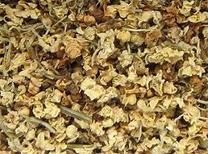

|
| Wie wird der Holunder genutzt?
Der Schwarze Holunder bietet Vögeln Schutz und Nahrung.
|  Die Früchten werden zu Saft und Marmelade verarbeitet.
Mit den frischen Holunderblüten wird Sirup oder Gelee zubereitet. Die getrockneten Blüten werden als Tee aufgegossen.
|